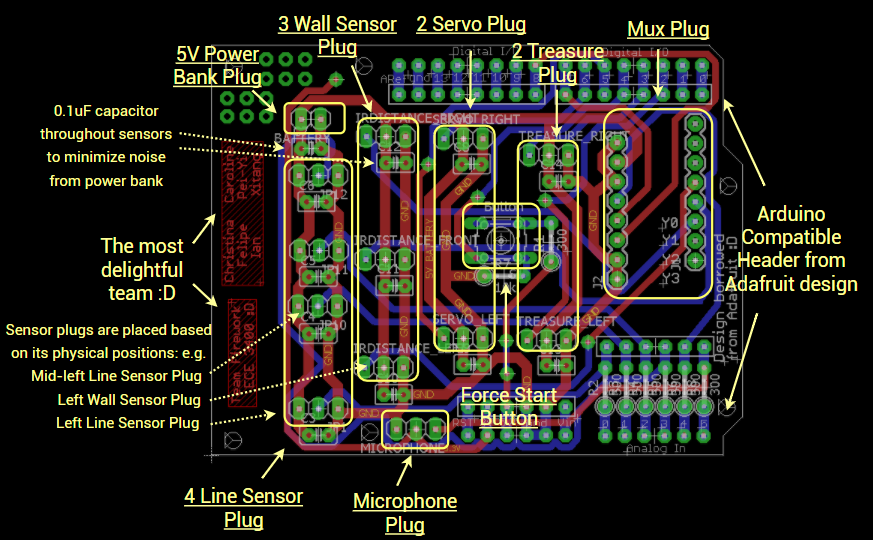
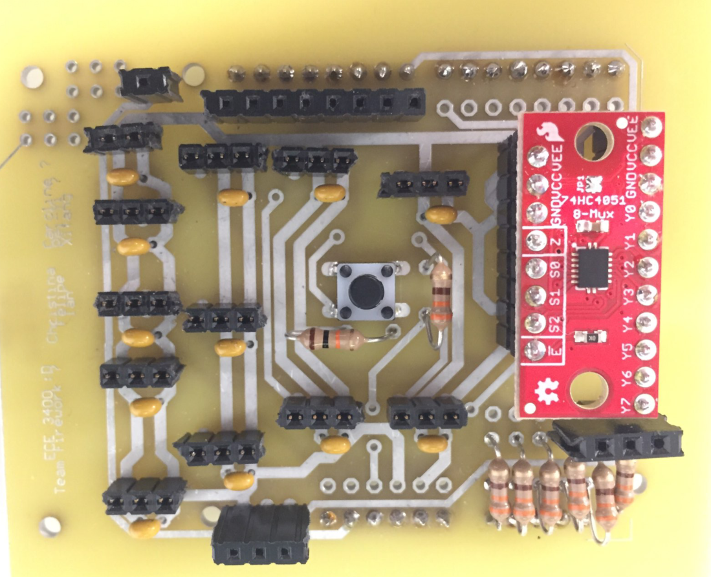
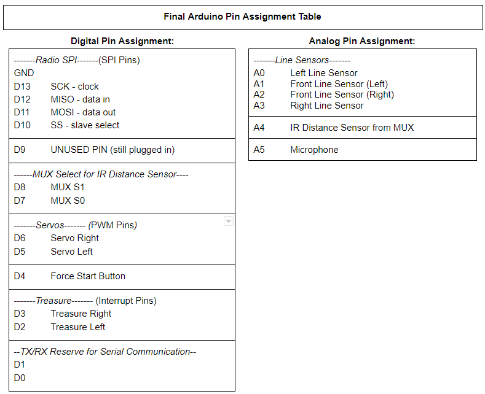
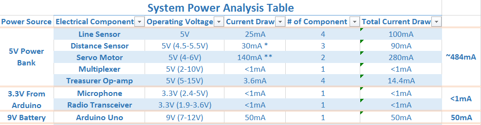
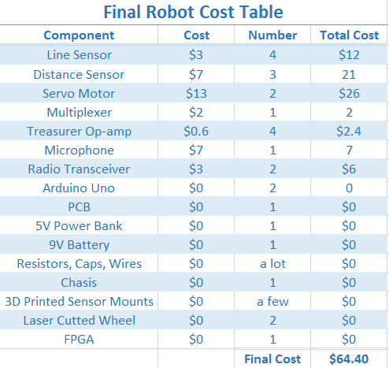
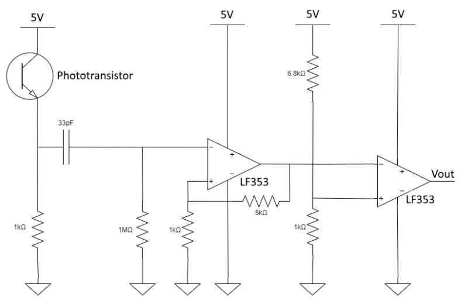
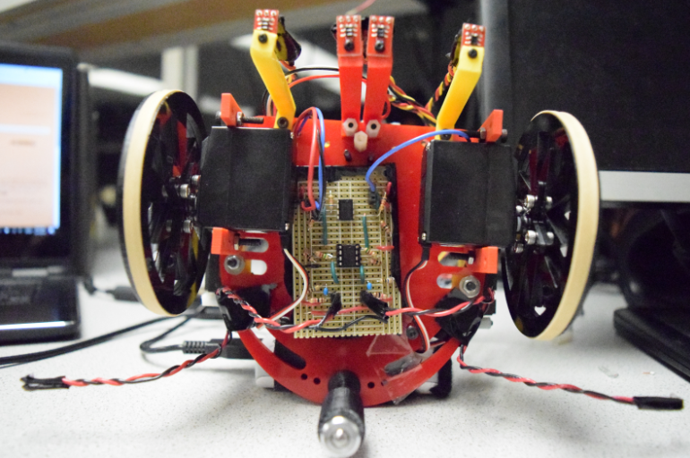

Meet Sparky
Team Fireworks is very excited to introduce you with our lovely robot Sparky. Sparky can detect the 660Hz starting tone so as all three types of treasures, had one of if not the best System PCB (Kirstin said she love it) and won the fifth place in the 2017 ECE3400 Maze Mapping Robot Competition :D

System Design
System Electrical Components Breakdown
Here are the high level bullet listed view of all the electrical components Sparky used:
4 QRE1113 Line Sensors [Sparkfun Link]
-
Two sensors in the middle are used for line following
-
Two sensors at the left and right edge are used for turning and intersection detecting
3 IR Distance Sensors [Sparkfun Link]
-
One sensor for left wall detection, one for front, and one for right
2 Servo Motors [Parallelx Link]
-
One motor for left wheel control and one for right wheel control
1 MAX4466 Microphone [Adafruit Link]
-
Used for starting tone detection
1 nRF24L01+ 2.4GHz Wireless Transceiver Radio [ElecFreaks Link]
-
Used to transmit the maze exploration data from Sparky to the Fireworks Base Station
1 74HC4051 Multiplexer [Sparkfun Link]
-
The Arduino Uno only had 6 analog input pins, but we need to use 8 pins (4 Line Sensors, 3 Wall Sensors, 1 Microphone). The multiplexer 74HC4051 allows us to use only one analog pin to read 3 wall sensor values by using 2 digital pins as signal select pins.
1 Arduino Uno [Sparkfun Link]
Sparky’s brain to be programmed to follow line, avoid wall, listen to tone, detect treasure, communicate through radio and explore the maze using DFS
2 Treasure Detection Circuitry that we built using LF353 Op-amp [Op-amp Datasheet Link]
System PCB
In this class, anything can go wrong will go wrong. Breadboard wirings are very prone to errors and it will go wrong: a simple loose wire can screw the entire system and it might waste teams tons of time to debug such small wire loose issue. A System PCB is the way to go for robust system design, so we made a System PCB for Sparky. It basically condenses most of wirings to the PCB and gets rid of all the crazy nasty breadboard wirings. It has plugs for every electrical component and plugs are placed based on the actual position of the component in the robot. On the PCB, each plug has three vias, two vias connected to power and ground and the other via is connected to the corresponding signal pin of the Arduino based on our Final Arduino Pin Assignment Table. (A 0.1uF decoupling capacitor is also placed directly next to each sensor to minimize noise from power bank and servo.) We then soldered 3x1 female pin header to the plug position of the PCB and also soldered male pin header to the three sensor wires. Now connecting the sensors to the system would simply be an easy snap and plug and it works like a charm :D.
|  |  |
Eagle PCB Design with Comment |
Fabricated PCB |
Eagle Schematics
Arduino Pin Assignment Table
Some thoughts for future improvements: 1. The long female pin header went out in the lab when the PCB came in, so we soldered the short female pin header on the board instead. We learned that the short female pin header doesn’t have a robust hold of the male pin connector. We should have re-soldered the long female pin header to the board to make our system more robust. 2. The PCB is very compact and this results in pin connectors blocking other pin connectors for the microphone circuitry and radio circuitry. We hacked and resolved the issue by stacking pin headers on top of pin headers to create more room. What we could have done differently in designing is to extend the PCB to make it bigger and more spread out to create more room. It might also be cool to create some good mounting structures on the PCB for microphone, treasure circuitries. Lastly, our design is based off Adafruit’s open source Proto Shield Design [link] and we reused its already well aligned digital and analog pin vias, so as Sparkfun’s mux aligned pin out. We would like to thank Adafruit and sparkfun for this and are as well open sourcing our design to contribute back to the open source community. Here is the [link] to our Schematics and here is the [link] to the PCB.
System Power Analysis
We did a thorough System Power Analysis by going through the data sheet of each component and making sure each is powered at the correct operating voltage.
We also calculated the total current drawn for each power source and made sure each power source can handle the current load.
-
For the 5V power bank, five components are drawing roughly 484mA of current, which is less than the max 1A outputting current of the power bank. The power bank is rated as 5000mAH, but in practice, it has some internal protection circuitry to prevent the battery from being drawn below 20% of its capacity to avoid permanently damaging the battery inside. This leaves us 4000mAH in practice. 4000mAH/484mA gives us roughly 8 hours of run time.
-
For the 3.3V Arduino power supply, two components are drawing below 1mA from the arduino with temporary surge to ~11mA during radio transmission, which is still less than the max 200mA outputting current from the 3.3V Arduino power supply.
-
For the 9V battery supply, the Arduino Uno is drawing about 50mA of current, which is less than the max hundreds mA outputting current of the battery pack. A typical 9V battery pack has about 400mAH usable capacity, which translates to 400mAH/50mA roughly 8 hours of run time.
System Cost Breakdown Table
Schmitt Trigger Treasure Circuit In Depth Talk
The treasure circuit was a success and we finally freed ourselves from the cumbersome FFT algorithm. Our final treasure detection system uses a schmitt trigger and feeds into a digital pin on the Arduino with interrupts enabled such that we can detect the time between rising edges of the blinking treasure sensor (the period) and use that to determine if we found a treasure and what kind. One of the problems we had to consider with this approach is that voltage spikes could trigger the interrupt and, if by coincidence the spikes occur at the right times, we could falsely detect a treasure. The fix we used for this is to detect the frequency 255 times before registering it as a treasure. The code example below applies to detecting 7kHz treasures with a print statement for debug.
bool treasureFound = false;
uint8_t treasure7 = 0;
if (period > 130 && period < 150 && !treasureFound && numTreasures < 3) {
if (treasure7 == 255) {
Serial.println("7kHz Treasure");
treasureFound = true;
treasure7 = 0;
numTreasures++;
}
treasure7++;
period = 0;
}
We also integrated conditions that only one treasure can be found per intersection and that there will be a maximum of 3 treasures per maze.
The circuit diagram shown below consists of four stages. The first stage is the treasure circuit from lab 2 which allows for a signal to be generated from a treasure. The next stage is a high pass filter to remove the DC offset from the signal. We found that the DC offset varies greatly with the amount of sunlight and fluorescent light incident to the sensor. The third stage is a simple non-inverting amplifier which amplifies our signal by a factor of 5 so that less precision will be required by our schmitt trigger. The last stage is the schmitt trigger itself. The threshold was set to be about 640 mV, a value determined by measuring the output of the amplifier. We ended up having to tune this value quite a bit. Also, we originally had much lower resistor values until we realized that low resistor values drew too much current and drained our battery too quickly. The schmitt trigger worked well, but the range was limited by the open-loop performance of the op amp used at higher frequencies. For 17kHz treasures, our range was much less than for 7kHz due to the schmitt trigger taking time to resolve to a value relative to the time it takes the treasure to blink on and off. This issue did not end up being significant, however, once we adjusted our threshold to the optimal point.
Treasure Circuit Schematics
Treasure Mount on Sparky